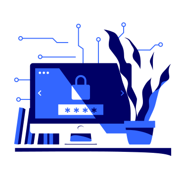

Fix vulnerabilities in your system through our product
Protect yourself and your presence on the Internet

About us
Our project is a vulnerability scanner that automates many ofthe monotonous tasks that information security specialists face. Instead of performing these tasks manually and generating
progress reports, our tool allows you to automate this process. This saves specialists time and effort, allowing them to concentrate
on more important security tasks.